Since 1.60.0 every chapter has its own gear: a set of armour, two weapons and four tools (a pickaxe, an axe, a shovel and a hoe), all made from what that chapter leaves behind. Each piece is a real 3D model in your hand, on you and in the inventory, with its own sounds and its own power. None of it wears out.
Item text below is copied from the game: the power in red, the description in grey. Recipes are written row by row, top to bottom, with . for an empty square. Every recipe shows up in the recipe book once you pick up what it's made from. The older weapons and armour (the Sinew Cleaver, Static Mail and the rest) are on Items and blocks.
At a glance
| Chapter | Armour (full-set power) | Weapons | Tools (perk) | Made with |
|---|---|---|---|---|
| One | The Vigil (Keep Watch) | The Censer, the Bell Clapper | Gravedigger's (Unearth) | Hymnal Pages, Grave Claws, iron |
| Two | The Scarecrow (Stand Still) | The Pitchfork, the Omen Staff | Harvestman's (Reap) | Blighted Straw, Bloodied Stuffing, a Devil's Horn, iron |
| Three | The Bloomwoven (Rooted) | The Thorn Whip, the Spore Mace | Heartwood (Overgrowth) | Knotted Roots, Heartblooms, Bloom Heartwood |
| Four | The Specimen (Hardened) | The Bone Saw, the Reactor Rod | Surgical Steel (Scan) | Hive Comb, Splitter Sinew, a Stalker Talon, a Bloater Gland, diamonds |
| Five | Dead Air (Off Air) | The Tuning Fork, the Relay Staff | Static (Chain) | Carrier Thread, Frames of the Last Reel, Vacuum Tubes, diamonds |
| Six | The Usher's Uniform (House Lights) | The Splicer, the Fly Hook | Stagehand's (Hush) | Ticket Stubs, Listener's Ears, gold, netherite scrap |
| Seven | On Air (Skip) | The Antenna Glaive, the On Air Mace | Hub-Stone (Skip) | Rerun Reels, netherite |
Chapter Eight (the Dead Water) has no set of its own. Its own kit is the Harpoon Gun, flares, air tanks and the submarine: see Items and blocks.
The armour sets
Each piece shows its set's power on its tooltip. Wear all four for it. Every set has an HD version and shader (LabPBR) maps, and its lights (the Vigil's candles, the crow, the bloom, the jar, the static, the Usher's torch, the ON AIR lamp) have their own copies for shader packs since 1.62.0. Putting on a whole set earns its advancement.
The Vigil (Chapter One)
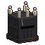
The Vigil (Chapter One)
Full set: Keep Watch
The candles light the dark round you;
every ten seconds they flare, and every
creepypasta near shows through the walls
The night watch's iron hood with a crown of candles burning on it, a long wax-stiff coat, iron pauldrons and a lantern swinging at the hip. Whenever it's dark round you (night, a cave, anywhere the sky doesn't reach) the candles light it, steady, with a real candle's flame dancing on each wick, a curl of smoke now and then and a soft crackle that everyone near can see and hear. Every ten seconds they flare, and every creepypasta within thirty-two blocks shows through the walls a while. Advancement: Keep Watch.
| Piece | Recipe |
|---|---|
| Vigil Hood | C C C / I H I / I . I |
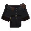 Vigil Coat | I . I / W H W / W W W |
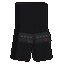 Vigil Leggings | W H W / W . W / I . I |
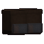 Vigil Boots | H . H / I . I |
C candle, H Hymnal Page, I iron ingot, W black wool.
The Scarecrow (Chapter Two)
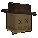
The Scarecrow (Chapter Two)
Full set: Stand Still
Stand still a moment and what's hunting
you loses interest (unless you've just
hurt it). Move, or strike, and it's back
A sacking mask with a stitched face under a crooked hat, straw out of every gap, and a crow on your right shoulder: glossy black with a blue-violet sheen, a heavy beak and yellow eyes. It shifts about on its feet, jerks its head round to look and flicks its tail. Stand still for a second and a half and whatever is hunting you gives up; while you stay still nothing new sets on you. Advancement: Out Standing in the Field.
| Piece | Recipe |
|---|---|
| Scarecrow's Sack | B U B / L . L |
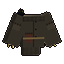 Scarecrow's Coat | L . L / L U L / B Y B |
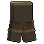 Scarecrow's Breeches | L U L / B . B / L . L |
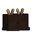 Scarecrow's Boots | U . U / L . L |
B Blighted Straw, U Bloodied Stuffing, L leather, Y hay bale.
The Bloomwoven (Chapter Three)
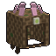
The Bloomwoven (Chapter Three)
Full set: Rooted
On soil - grass, dirt, moss, mud -
you heal. The Bloom and its flies
won't have you
Woven of the Bloom's roots: a cowl with a crown of petals that breathe and a bloom lit on the brow, its face the pitch-black hollow of the original with roots grown over the rim. Standing on soil you heal, and the Bloom and its flies leave you alone. Advancement: Rooted.
| Piece | Recipe |
|---|---|
| Bloomwoven Cowl | K F K / K . K |
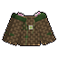 Bloomwoven Tunic | K . K / K W K / K F K |
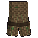 Bloomwoven Leggings | K W K / K . K / K . K |
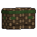 Bloomwoven Boots | F . F / K . K |
K Knotted Root, F Heartbloom, W Bloom Heartwood.
The Specimen (Chapter Four)
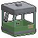
The Specimen (Chapter Four)
Full set: Hardened
Each blow you take hardens you more:
Resistance I, II, III, a while after the last.
A kill puts two hearts back into you
A specimen jar over your head, full of thick green fluid lit from inside, motes drifting and bubbles rising in it, a lid, tubes and an eye bobbing about; a patient's gown, restraints, and an IV bag on your back. Each hit you take hardens you a step further (Resistance I, II, III), for four seconds after the last one. Advancement: Specimen.
| Piece | Recipe |
|---|---|
| Specimen Jar | I C I / G . G / G G G |
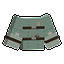 Specimen Gown | W . W / W N W / W C W |
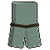 Specimen Leggings | W N W / W . W / W . W |
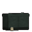 Specimen Boots | N . N / L . L |
I iron ingot, C Hive Comb, G glass, W white wool, N Splitter Sinew, L leather.
Dead Air (Chapter Five)
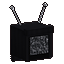
Dead Air (Chapter Five)
Full set: Off Air
Crouch and you go off the air: unseen
and invisible for five seconds -
then twenty more to come back on
A black hood with a screen where your face was, playing static that rolls and breaks up, with now and then a face surfacing in it; two aerials lit at the tips that whip about as you move; a long black coat with static running down its lapels. Crouch and you go off the air. Advancement: Off the Air.
| Piece | Recipe |
|---|---|
| Dead Air Hood | B F B / B . B |
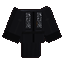 Dead Air Coat | B . B / B T B / B F B |
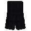 Dead Air Leggings | B T B / B . B / B . B |
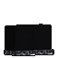 Dead Air Boots | T . T / B . B |
B black wool, F Frame of the Last Reel, T Carrier Thread.
The Usher's Uniform (Chapter Six)
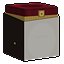
The Usher's Uniform (Chapter Six)
Full set: House Lights
The things that listen can't hear you
walk. What you strike from behind
takes half as much again
The Starlite's maroon and gold, made again in 1.61.1: a gilt-rimmed porcelain mask split by a gold seam (narrow slanted black eyes, half a smile and half a frown, a black tear, the glaze crazed); a tall pillbox cap with its band, badge, button and chin strap; a velvet jacket with a bow at the throat, braided aiguillettes, a name tag and tails swinging behind; the usher's torch lit at your belt. The things that listen (the Audience, the Listener and the Deaf King) can't hear you walk. Advancement: Front of House.
| Piece | Recipe |
|---|---|
| Usher's Cap | R R R / R S R / G . G |
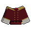 Usher's Jacket | R . R / G S G / R R R |
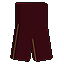 Usher's Trousers | R S R / R . R / R . R |
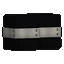 Usher's Shoes | E . E / L . L |
R red wool, S Ticket Stub, G gold ingot, E Listener's Ear, L leather.
On Air (Chapter Seven)

On Air (Chapter Seven)
Full set: Skip
A blow of three hearts or more skips
you out of its way instead, a few
blocks off, unhurt (every 15 seconds)
Studio gear: a test-card visor that cycles, slips and rolls; headphones and a mic on a boom that bobs; the ON AIR lamp on top, pulsing; a crew jacket with a battery pack, a tally light and tape reels turning on the back. Advancement: Live.
| Piece | Recipe |
|---|---|
B R B / P G P | |
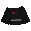 On Air Jacket | B . B / P N P / B B B |
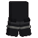 On Air Trousers | B P B / B . B / N . N |
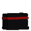 On Air Boots | P . P / B . B |
B black wool, R redstone lamp, P Rerun Reel, G glass pane, N netherite scrap.
The weapons
Two for each chapter. A fully charged swing (wait for the attack meter) sets off the weapon's power; use (right-click) sets off its ability, which takes ten seconds to come back. Damage and speed are the item's own numbers, as its tooltip shows them.
| Weapon | Power | What its tooltip says | Damage / speed | Recipe |
|---|---|---|---|---|
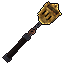 The CenserChapter One | Incense | A church censer on its chain, still smouldering. Full swings blind and slow. Use: whirl it round you, striking all close | 7 / 1.2 | G H G / . N . / . S .G gold ingot, H Hymnal Page, N iron chain, S stick |
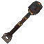 The Bell ClapperChapter One | Toll | The clapper out of the Hollow's bell. Full swings throw back hard and stagger. Use: strike the ground - the toll rings out | 9.5 / 0.7 | H B H / . I . / . S .H Hymnal Page, B bell, I iron ingot, S stick |
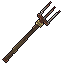 The PitchforkChapter Two | Pin | Three rusted tines. A long reach. Full swings pin it where it stands, bleeding. Use: lunge, and carry what you skewer | 7.5 / 1.3 | I . I / I B I / . S .I iron ingot, B Blighted Straw, S stick |
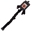 The Omen StaffChapter Two | Omen | An eye in a cage, and it looks back. What it strikes takes 30% more from anything. Use: the eye opens on all before you | 6.5 / 1.6 | . E . / . D . / . S .E eye of ender, D Devil's Horn, S stick |
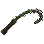 The Thorn WhipChapter Three | Lash | A vine off the Bloom, thorned. The longest reach. Full swings bleed it and draw it in. Use: lash out and drag it to you | 7 / 1.7 | K K F / . K . / W . .K Knotted Root, F Heartbloom, W Bloom Heartwood |
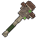 The Spore MaceChapter Three | Bloom | Heartwood, grown over with the Bloom's fungus. Full swings poison. Use: a cloud of spores where you aim | 9.5 / 1.0 | . M . / M F M / . W .M red mushroom, F Heartbloom, W Bloom Heartwood |
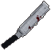 The Bone SawChapter Four | Rend | Surgical steel, its teeth clogged. Full swings open the wound twice over. Use: rev it - all in front of you is torn at | 7.5 / 1.8 | . I T / . I . / S . .I iron ingot, T Stalker Talon, S stick |
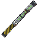 The Reactor RodChapter Four | Meltdown | A control rod out of the reactor pool. Its touch withers. Use: vent the core - a wave that withers all round | 8.5 / 1.3 | . G . / I Y I / . I .G glowstone dust, I iron ingot, Y Bloater Gland |
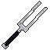 The Tuning ForkChapter Five | Resonance | It never quite stops ringing. Full swings ring on: the blow lands again, through armour. Use: a line of sound, through all on it | 8 / 1.8 | I . I / I V I / . D .I iron ingot, V Vacuum Tube, D diamond |
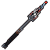 The Relay StaffChapter Five | Relay | A relay mast in miniature, its insulators lit. Full swings arc on to two more. Use: call the static down where you look | 9 / 1.2 | . L . / V T V / . I .L lightning rod, V Vacuum Tube, T Carrier Thread, I iron ingot |
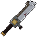 The SplicerChapter Six | Jump Cut | The projection booth's splicing blade. Full swings cut a few frames out: it's further off. Use: cut to behind what you look at | 9 / 1.7 | . I I / . S I / N . .I iron ingot, S Ticket Stub, N netherite scrap |
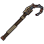 The Fly HookChapter Six | Rigging | The stage's fly hook, on its pole. A long reach. Full swings haul it toward you. Use: hook the rigging where you look, and swing to it | 9.5 / 1.3 | I I L / . S . / . N .I iron ingot, L lead, S Ticket Stub, N netherite scrap |
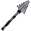 The Antenna GlaiveChapter Seven | Interference | A glaive made of a television aerial. Its touch weakens and slows. Use: hold a beam of static where you look | 10.5 / 1.2 | . . L / . P . / N . .L lightning rod, P Rerun Reel, N netherite ingot |
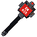 The On Air MaceChapter Seven | Rerun | The studio's ON AIR light, for a mace head. Full swings skip: the blow lands again a second later. Use: go on air - the hostile show and slow | 12 / 0.9 | . R . / . P . / . N .R redstone lamp, P Rerun Reel, N netherite ingot |
Reach. The Thorn Whip reaches five blocks; the Pitchfork, the Fly Hook and the Antenna Glaive four and a half (a hand reaches three). The Tuning Fork and the Relay Staff are Chapter Five's, but both are made with Vacuum Tubes, which come from the Tuned in the Watcher's Vault in Chapter Six. Hold a weapon from every chapter for Something for Every Chapter.
Moving parts. Held, dropped or in an item frame they move: the censer's chain and pot swing, the bell clapper's ball shivers after a blow, the pitchfork's straw stirs, the Omen Staff's caged eye looks about, the thorn whip's vine writhes, the spore mace's sacs breathe, the bone saw's blade twangs, the reactor rod's bands turn round its throbbing core, the tuning fork hums, the relay staff's dish turns and its lamp blinks, the splicer's sprockets turn, the fly hook swings on its line, the antenna glaive's elements ripple, and the On Air mace's head turns with its tally light blinking.
The tools
A pickaxe, an axe, a shovel and a hoe for each chapter, made the way the game's own are (the axe strips logs, the shovel makes paths, the hoe tills), with the chapter's token in one square. Iron's worth in the first chapters, up to netherite's in the last. Each chapter's four share a perk, shown on the tooltip.
| Tools | Perk | Mines like / speed | Made with (M, X) |
|---|---|---|---|
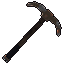 Gravedigger'sChapter One | Unearth: What you dig out of soil, sand and gravel isn't always only that | Iron / 7 | Iron ingots, Grave Claw |
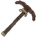 Harvestman'sChapter Two | Reap: Ripe crops sow themselves again; the axe fells the whole tree | Iron / 7.5 | Iron ingots, Blighted Straw |
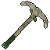 HeartwoodChapter Three | Overgrowth: Twice as fast through wood and green; leaves give their saplings. Crouch-use: it grows | Diamond / 8.5 | Bloom Heartwood, Knotted Root |
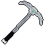 Surgical SteelChapter Four | Scan: Use: the ores round you show through the stone for six seconds | Diamond / 9 | Diamonds, Hive Comb |
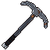 StaticChapter Five | Chain: The break runs on through up to six more of the same block, touching | Diamond / 9.5 | Diamonds, Carrier Thread |
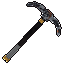 Stagehand'sChapter Six | Hush: The things that listen don't hear your work. Glass and ice come away whole | Netherite / 10 | Netherite scrap, Ticket Stub |
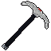 Hub-StoneChapter Seven | Skip: The block behind breaks too (crouch: just the one). The hoe tills three | Netherite / 11 | Netherite ingots, Rerun Reel |
The shapes, with M the material and X the token: pickaxe M X M / . S . / . S ., axe M X / M S / . S, shovel X / M / S, hoe M X / . S / . S (S stick). For comparison, the game's own iron tools mine at 6, diamond at 8 and netherite at 9. Each set moves too: the gravedigger's nail rattles, the harvestman's straw and the heartwood's leaves stir, the surgical lights blink, the static valve flickers, the stagehand's tag swings on its cord, and the band of Hub stone turns.
Where the makings come from
| Token | From |
|---|---|
| Hymnal Page | The Hymnal |
| Grave Claw | The Underneath |
| Blighted Straw | The Harvestman; the Murder Mansion's chests |
| Bloodied Stuffing | The Bunnyman; the Murder Mansion's chests |
| Devil's Horn | The Jersey Devil; the Murder Mansion's store |
| Knotted Root | Rootlings, the Gardener; the Bloom's research station |
| Heartbloom | The Gardener; the glasshouse's Seed Vault |
| Bloom Heartwood | The Gardener, Reborn |
| Hive Comb, Splitter Sinew, Stalker Talon, Bloater Gland | The Flesh's mutants: the Hive; Splitters and Crawlers; Stalkers; Bloaters |
| Frame of the Last Reel | Afterimages at the Starlite; the Null ruins |
| Carrier Thread | The Carrier (6 to 10) |
| Ticket Stub | The Audience (some of them), the Ushers and the Crowd |
| Vacuum Tube | The Tuned (some of them) and the Projectionist |
| Listener's Ear | Listeners, in the Deep |
| Rerun Reel | A replay beaten again (below) |
The Rerun Reel

Rerun Reel
AS SEEN BEFORE
Left behind by a replay, beaten again.
Chapter Seven's gear is made with it.
Walk into one of the replay portals in the Hub and that chapter's last fight comes back for another go. Beat it again and it leaves three or four Rerun Reels behind. All of Chapter Seven's gear (On Air, the Antenna Glaive, the On Air Mace, the Hub-Stone tools) is made with them. First one earns Rerun.
The gloves
Three of the older gloves (two weapons and a climbing glove) were made again in 1.61.1 and are worn on the hand. Their recipes and powers are on Items and blocks.
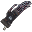
Rending Claws
Frenzy
Black stitched hide sewn with bone-pale thread, a ruff of the Dogman's grey fur at the wrist, an iron plate on the back of the hand with a cracked little screen in it, static still crawling on it. From every fingertip a long barbed blade of blued steel, a shorter one on the thumb, and one of the Dogman's fangs swinging on a cord. Now and then they drum their blades one finger after another. Their swing is a rake: down and across, then back the other way.
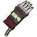
Brute Knuckles
Hurl
An iron gauntlet over a black glove, the Brute's knuckle-bones and their spurs set in its knuckle bar, its reflective band riveted over the back, the wrist bound in Splitter sinew with a torn strip of the coat hanging off it. Now and then the fist clenches, leather creaking, iron knocking.
Stalker Claws
A climber's glove of brown leather with three of the Stalker's long fingers lashed along its own, their black nails hooking out past them. The talons click, one after another, and flex.
Heads, worn
Since 1.60.0 every creature head can go on your head. It goes on over your own (yours is hidden under it), and the edges of your screen darken as you look out through it.
Wear it
Its own kind take you for one of them:
they notice you from only half as far off.
The heads are the ones the creatures of chapters one to three drop: see the bestiary.
How they swing
Since 1.61.0 every one of the mod's weapons and tools swings its own way, in first person, in third, and for everyone watching. Blades cut from high right to low left; cleavers, axes, maces and hammers come up over the shoulder and down hard; scythes, glaives and the censer sweep flat round; the thorn whip and the fly hook crack; the bone saw saws, two strokes; knuckles and claws jab; staves turn over in the hand and come round; the needle, the pitchfork and the tuning fork thrust; picks swing short, spades dig, hoes chop. The blow lands a tenth of a second or so after the click.
Where a blow lands there's a flash, a white-hot star and its shock ring in the weapon's own colour (blood, bone, static, hellfire, sap, candle-flame, film-gold...), bigger for heavy weapons, big targets and criticals, with sparks flung the way the swing went, and the sound of the blow under the weapon's own: an edge biting, something heavy landing, a point going in, with a bright ring on a critical. Since 1.61.1 one-handed weapons are held a little forward, the long ones across the body in both hands and the heavy ones low in both hands, and in first person a weapon trails your turning, dips with each step and is carried low at a run.
In the HD pack every texture of the chapters' gear is four times the mod's own, upscaled with an AI upscaler (Real-ESRGAN).